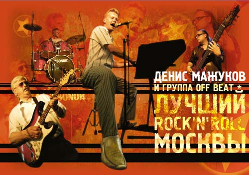

История группы "OFF Beat" неразрывно связана с ее лидером и вдохновителем Денисом Мажуковым.
Весной 1994 года барабанщик Игорь Данилкин, бас-гитарист Дмитрий Гайдуков и пианист-клавишник Денис Мажуков, работая в группе "Браво", узнали о том, что Евгений Хавтан (основатель и руководитель этого коллектива) собирается в конце лета сменить часть состава коллектива музыкантов группы. В связи с этим, ребята решили создать уже в рамках "Браво" свой собственный коллектив, не имеющий аналогов в отечественном шоу-бизнесе. Данилкин предложил назвать группу "OFF Beat" (одно из значений этого термина " - означает на вторую, слабую долю" (прим.)), что собственно говорит о неслучайности выбранного названия.
И вот после нескольких репетиций, пригласив в состав ветерана рок-н-ролла, гитариста группы " Старая Гвардия" Валерия Гелюту, группа дала дебютный концерт в клубе "Алябьефф". Это произошло 12-го августа 1994 года. И в то время стало понятно, что рождение этого коллектива ознаменовало собой новую эпоху рок-н-ролла в России.
Уже с осени " OFF Beat" "гремел" в лучших ночных клубах и на престижных концертных площадках Москвы, преподнося приятнейший сюрприз не только старой армии " шестидесятников", но и стремительно завоевывая поклонников среди современного поколения. Успешная концертная деятельность коллектива способствовала тому, что альбом новой группы просто обязан был появиться. И в декабре 1994 года "OFF Beat" приходит на студию "SNC Records" записывать свой первый диск. Репертуар альбома был подобран оригинальным образом; помимо 12-ти классических хитов рок-н-ролла и блюза, Денис Мажуков предложил музыкантам записать несколько песен, написанных в свое время его знаменитым отцом, композитором Алексеем Мажуковым, в собственной оригинальной обработке. Специально для исполнения русскоязычных песен на запись был приглашен вокалист Юрий Колесник, кстати уже тогда преподававший вокальное народное творчество в Гнесинке. Альбом с одноименным названием "OFF Beat" увидел свет в мае 1995 года.
К концу 1995 года название коллектива внезапно исчезло с афиш московских клубов и из рок-н-ролльной жизни столицы: Гайдуков и Данилкин ушли в шоу-бизнес (посчитав вероятнее это дело более прибыльным), а Мажуков уходит с головой в студийную работу. Эксперементируя с новыми звуками, музыкальными находками и инструментами, Денис делает множество домашних записей в различных музыкальных стилях, помогает в записи и концертной работе многим исполнителям, а также на молодежном канале радио "Юность" вместе со своим давним другом-единомышленником, пианистом и вокалистом Алексеем Блохиным, ведет музыкальную программу о рок-н-ролле и блюзе с незаурядным названием "Три правильных аккорда".
В декабре 1996 года Мажуков знакомится с Денисом Антиповым, человеком который убедит и сподвигнет тезку возобновить творческую и концертную деятельность на новом уровне, предложив себя в качестве администратора коллектива. Антипов приводит в группу молодого бас-гитариста Михаила Ершова и в скором времени становится первым официальным менеджером "OFF Beat".
В феврале 1997 года Мажукову поступает невероятное предложение - открывать концерты легенды рок-н-ролла Джерри Ли Льюиса в ГЦКЗ "Россия"в Москве 21-22 марта.
Денис Мажуков - вокал, фортепиано
Александр Жаворонков - гитара
Михаил Ершов - бас
Виктор "Чак" Костров - ударные
Именно в таком составе "OFF Beat" вышел на сцену "России". После концерта состоялась встреча великого музыканта и его талантливого последователя. Джерри Ли Льюис получив в подарок альбом "OFF Beat" растрогался и сказал: "Я обязательно дам его послушать своим друзьям в Мемфисе" и добавил, по-дружески обняв Мажукова: "You play like me,when I was a young" (Ты играешь так же, как я в молодости).
Тем временем Денис Антипов принимает большое участие в концертной деятельности группы. В начале лета 1997 года он на свои собственные средства покупает звуковую аппаратуру для коллектива и договаривается со студией в Сокольниках, на которой "OFF Beat" записывает помимо классики рок-н-ролла,собственные русскоязычные песни, которые, к сожалению так и не были изданы, но звучали на многих музыкальных радиостанциях и в прямых радиоэфирах, организацию которых брал на себя Денис Антипов.
И вот в начале августа происходит еще одно знаменательное событие: Антипов звонит Мажукову и ставит его перед фактом: " Завтра ты играешь с Чаком Берри на закрытии Международного Кинофестиваля в Москве" (Это был второй приезд знаменитого рок-н-ролльщика в столицу.В отличии от первого, (официального) об этом визите не было сообщений в СМИ (прим.), тот не верит..
На следующий день была репетиция на студии "SNC Records" , где "отцу рок-н-ролла" были представлены два музыканта, которым выпала честь играть с мэтром; Это Александр Торопкин( ударные) из "Crossroads" и сам Мажуков. Чак Берри выбором остался очень доволен ( как сказал сам Денис, о самой репетиции нужно писать отдельную книгу). Поэтому мы не будем заострять на ней свое внимание.
Вечером того же дня на Пушкинской площади Москвы состоялся этот эпохальный концерт, от которого пришли в восторг не только несколько тысяч человек, случайно оказавшихся в центре столицы, но и сама " легенда" - он был настолько поражен игрой Мажукова , что предложил ему совместное турне по Америке, но к сожалению, благодаря российским устроителям, которые имели непосредственное отношение к приезду Чака Берри, этим планам не суждено было сбыться.
В сентябре Антипов организует участие Дениса Мажукова (сольно), как специально приглашенного гостя в рамках сольных концертов бывшего контрабасиста легендарных " Stray Cats" Ли Рокера. На сцене кафе "ChesterField" Мажуков сыграл и спел несколько рок-н-роллов под аккомпанемент самого Ли Рокера и его команды. После концерта они познакомились и сфотографировались на память.
Вторая половина 1997-1998 гг - пик наивысшего концертного подъема "OFF Beat". По 30-40 концертов в месяц, гастроли по России (Владимир, Киров, Ярославль и многие другие).
В начале 1999 года в группу пришел Николай Второв, контрабасист и основатель известного в конце 80х-начале 90х рокабилли-коллектива "Бриолиновая мечта". Чуть позже к коллективу присоединяется барабанщик Евгений Ломакин ( он в середине 90х играл в группе Алексея Блохина "Crazy Man Crazy") и к лету состав выглядел следующим образом:
Денис Мажуков - вокал, фортепиано
Александр Жаворонков и Валерий Гелюта - гитары
Николай Второв - бас
Евгений Ломакин - ударные
Но перед этим, в мае 1999 года, Николай Тишков- ( в то время директор культового молодежного клуба " Taxman" ) везет Мажукова в Хельсинки( Финляндия) с целью реального знакомства с устроителями последующих гастролей в Финляндию группы " OFF Beat". Будучи там, Денис выступает в рамках городского праздника на центральном стадионе в шоу-программе с четырьмя рок-н-роллами; вокал и фортепиано. Толпа в количестве 15 000 пришла в экстаз и танцевала до потери памяти. В той же самой поездке Мажуков дал интервью на радио, в прямом эфире ( программа "Доброе утро, Хельсинки"), а так же интервью крупнейшей шведско-финской газете.
Осенью того же года Мажуков стал готовить второй альбом. Пластинка " That's what I am " была записана в ноябре - декабре 1999 года на студии "Акустика" в сотрудничестве с прекрасным звукорежиссером Дмитрием Кротовым. Этот альбом представлял собой чудесное смешение различных стилей: Это и традиционные рок-н-роллы ( " Rip it up", "Breathless"), кантри - баллады ( "Early Morning Rain","You don't know me", "Games People Play"), незатейливый вестерн ( " Hallo Mary Lou") и даже нашлось место для рок-боевичка Чарли Рича (" Mohair Sam "). Помимо музыкантов " OFF Beat", в записи принимали участие такие музыканты, как Александр Василенко (Талантливый гитарист и автор многих учебников-пособий по гитаре), блюзовый гитарист Юрий Кривошеин( " Scolder Blues Band" ), прекрасная российская певица Маша Кац, кантри-музыкант и губной гармонист Дмитрий Новокольский ("Aplle Jack"), Андрей Шепелёв (добро и pedal-steel) из группы "Грассмейстер" и многие другие. Альбом вышел в 2000 году, и некоторые поклонники коллектива посчитали его даже немногим лучше, чем предыдущий диск.
В начале осени 2000 года в группу приходит новый директор - Тимофей Коломников и начинается очередная волна концертных выступлений "OFF Beat". Благодаря появлению коллектива в программе Дмитрия Диброва "Антропология"(16 ноября 2000 года) группа обрела новых поклонников и новые знакомства. Среди "новых почитателей" оказались люди "по ту сторону океана", которые увидев "Антропологию", пригласили "OFF Beat" в Нью-Йорк. Коломников взял на себя всю ответственность по подготовке и оформлению поездки в США.
В первой половине 2001 года в коллектив пришли гитарист Александр Василенко и бас-гитарист Дмитрий Рыбалов. Но так как последний пришел в группу за месяц с небольшим до гастролей, в США Дмитрий поехать не смог.
Денис Мажуков
Александр Василенко
Николай Второв
Евгений Ломакин
Именно в таком составе "OFF Beat" отправились в конце мая 2001 года на гастроли в Нью-Йорк, чтобы дать грандиозный концерт в трёхтысячном зале "Millenium" на Брайтон-Бич (это было последнее выступление Николая Второва и Евгения Ломакина в составе "OFF Beat").Там в Нью-Йорке Денис Мажуков встретил своего давнего друга, Алексея Блохина, (который уже более 4-х лет жил в Америке) и они вместе с директором группы Тимофеем и с небольшой помощью местных музыкантов, устроили угарный рок-н-ролльный концерт в клубе "Orange Bear" на Манхэттене.
В сентябре 2001-ого, в коллектив приходит один из легендарных барабанщиков 70-х годов - Алексей Колодий. Состав группы выглядит следующим образом:
Денис Мажуков - вокал, фортепиано
Александр Василенко - гитара
Дмитрий Рыбалов - бас
Алексей Колодий - ударные
В начале лета 2002 года, после почти двух лет работы с группой "OFF Beat", сложил свои полномочия директора группы Тимофей Коломников,но коллектив оставшись без менеджера на долгих четыре года,при этом успешно продолжает свою концертную деятельность.
В июле 2004 года "OFF Beat" в качестве представителей России едет в Мрангово (Польша) на фестиваль "Country Europa 2004" и занимает там 2-е место. Эту поездку организовал известный в прошлом джазовый музыкант Андрей Зиновьевич Давидович, сделавший очень много для становления кантри музыки в России и продвижения её в Европу.
В сентябре 2004 года состав "OFF Beat" меняется в очередной раз. В команду приходит молодой барабанщик Александр Половинкин и возвращается (после 4-х летнего отсутствия) Валерий Гелюта. Также Денис Мажуков приглашает в качестве бэк-вокалистки Кристину Сикорскую (дочь легендарного музыканта Алика Сикорского, начинавшего ещё в далекие 60-е), которая впоследствии приобрела статус клавишницы группы, исполняя несколько вокальных-сольных композиций и дуэтов с лидером "OFF Beat".
В октябре 2004 года "OFF Beat", (с маленьким опозданием), отметил своё 10-ти летие в " Кафе-Блюз". Принимали участие: Алексей Блохин, Алик Сикорский, Евгений Хавтан, Роберт Ленц, группы "Apple Jack" и "Scolder Blues Band", контрабасист Алексей "брат" Вихрев и гитарист Павел Стёпин (оба "Mister Twister"), Тимур Поповкин и многие другие:.
Весной 2005 года Денис Мажуков задумал записать пластинку, часть концепции которой - это дуэты со звездами отечественной эстрады и "видными" живыми музыкантами. Часть работы уже сделана и мы будем с нетерпением ждать выхода этого грандиозного альбома.
В 2006 году в коллектив пришла талантливый директор Виктория Тарновская, на которую коллектив возлагает большие надежды.
Ну что, господа? The Show Most Go On!!!!!!!!!!!!!!!
Автор - Дмитрий Новокольский.
Контакты: www.offbeat.ru
e-mail:
тел. Виктория